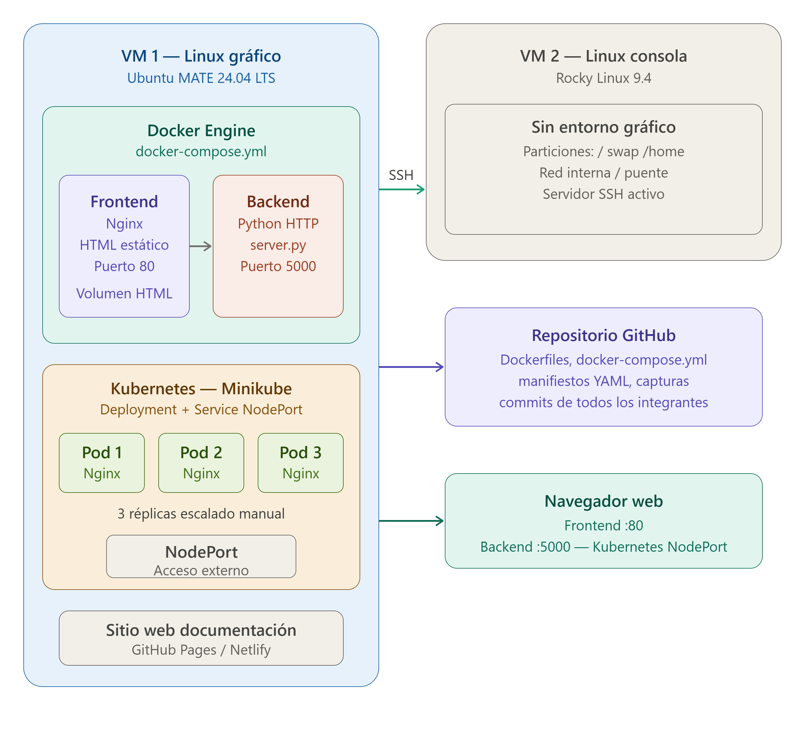

Proyecto Final — Arquitecto Cloud
Sistemas Operativos 750001C | Grupo 2
Universidad del Valle — Semestre 1, 2026
Objetivo
Construir una infraestructura tecnológica integrando máquinas virtuales Linux, contenedores Docker y orquestación con Kubernetes Minikube.
Tecnologías usadas
- Ubuntu MATE 24.04 LTS (VM gráfica)
- Rocky Linux 9.4 (VM consola)
- Docker Engine + Docker Compose
- Kubernetes con Minikube
Video Demostrativo
Diagrama de Arquitectura
